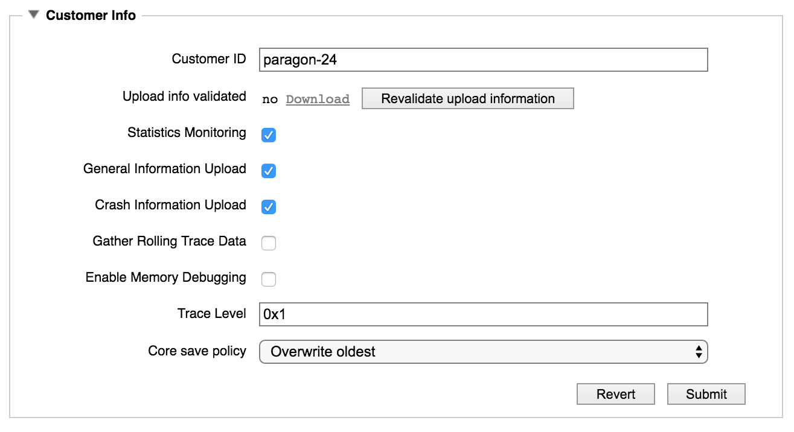
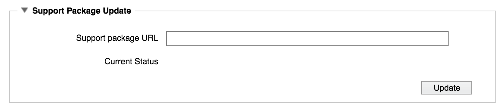
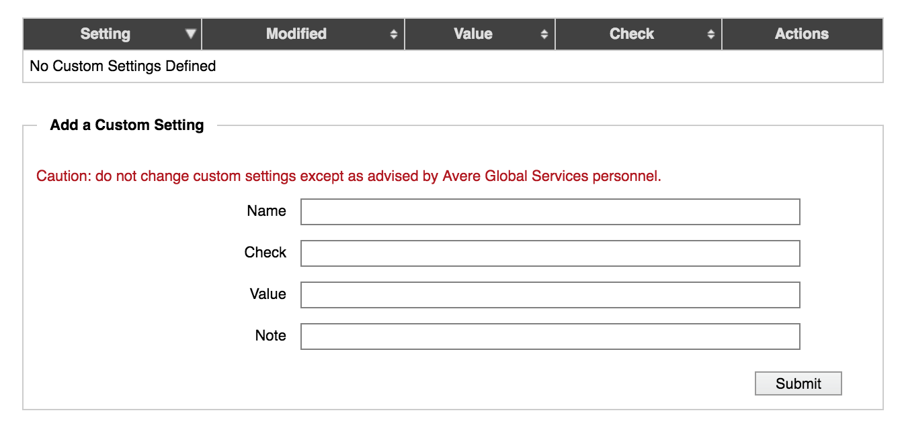

Cluster > Support
The settings on the Support page manage the type of information your cluster keeps and provides to Avere Global Services if the cluster has a problem.
This page is used in conjunction with the Support tab to assist Avere Global Services in evaluating your system’s status.

Keeping the settings on this page current can expedite troubleshooting and recovery if you need to contact Avere Global Services for support.
There are several sections on the page:
If a section is collapsed, click the triangular control next to the name to show the options.
Customer Information
In the Customer Info panel, you can configure general monitoring settings and some automatic uploads to Avere Global Services that can help detect and troubleshoot possible issues.
{kind=link}
- Customer ID
- This field contains the cluster identifier that you or your Avere Systems representative entered when creating the cluster. This field identifies your cluster for Avere Global Services. If you have multiple clusters, make sure that each cluster has a unique ID.
- Upload Validation
The Upload info validated field indicates whether or not Avere Global Services has successfully received information from this cluster. If this value does not read
yes, click the Revalidate upload information button.If recent uploads have failed, a Download link appears so that you can save the report and send it manually.
Contact Avere Global Services if your upload cannot be validated. Upload failures typically are caused by network security configuration issues or connectivity problems. (Some companies require a proxy server when sending information from a data center to an external internet address; read Using Web Proxies with Avere OS for more information about how to configure a proxy server for support uploads.)
- Monitoring Options
A series of checkboxes allows you to configure various monitoring and file sharing options. You can discuss the appropriate settings with your Avere Systems representative during product installation, or with Avere Global Services when you are troubleshooting an issue.
Some of the settings in this section turn on automatic uploads to Avere Global Services, and others only enable data collection for later manual upload.
- These options activate automatic system information uploads to Avere Global Services:
- Statistics Monitoring (nightly upload)
- General Information Upload (nightly upload)
- Crash Information Upload (upload if an unplanned restart occurs)
- These options turn on extra data collection for manual uploads from the Support tab. (Read Using the Avere Control Panel Support Tab to learn more.)
- Gather Rolling Trace Data
- Enable Memory Debugging
Each option is explained in more detail below.
Statistics Monitoring - This option turns on a nightly upload of several detailed statistics about the cluster, which can allow Avere Global Services to detect potential problems before they become serious. Statistics are collected every ten minutes, then uploaded at 1:00 a.m. local time.
Avere Global Services often recommends that this item be enabled by default.
General Information Upload – This option enables the nightly upload of a cluster-wide system report, including log files, configuration information, and other historical cluster data. This upload occurs nightly at 1:00 a.m. local time.
Avere Global Services often recommends that this item be enabled by default.
Crash Information Upload - This option sends Avere Global Services notifications of process core files, with pertinent information surrounding the event.
Avere Global Services recommends that this item be left enabled.
Gather Rolling Trace Data – This option causes the cluster to gather various levels of timing trace information (based on the Trace Level setting, configured below).
Avere Global Services typically recommends enabling this option only when troubleshooting an issue.
Enable Memory Debugging - This option causes the cluster to save information about memory usage during cluster operation. This option provides a deeper level of memory debugging information than other monitoring options.
Avere Global Services recommends enabling this option only when troubleshooting an issue.
- These options activate automatic system information uploads to Avere Global Services:
- Trace Level
- Enter a value in this field only if instructed to do so by Avere Global Services. Your representative will provide an appropriate value if one is required. This field is generally used only when troubleshooting an issue.
- Core Save Policy
This setting determines how core files are retained. If a failure results in a core file, Avere Global Services can analyze the file as part of investigating the cause. Core files are stored in a system drive partition designated for support-related files; core files can use up to 40% of this partition’s space, in the default configuration.
Possible values include the following:
- Overwrite Oldest - If the core file space is full, delete the oldest saved core file when a new core file is generated. This is the default value.
- Overwrite Newest - If the core file space is full, delete the most recent core file when a new core file is generated.
- Use Available Space - Save core files until the entire support partition is full. If the partition fills, new core files will not be saved. This configuration is useful only in specific situations and generally is not recommended.
Before choosing a non-default value, consult your Avere Systems representative.
Secure Proactive Support (SPS)
Secure Proactive Support is a feature that allows remote troubleshooting with minimal customer involvement. When you enable SPS, a message about the current state of the system is transmitted to Avere Systems using a secure link, at a time interval that you set.

SPS uses the same upload mechanism as the statistics configured in Customer Info section.
SPS can send information like the following:
- Summary statistics (as seen on the Avere Control Panel Dashboard)
- Alerts or conditions
- The state and hardware configuration of cluster nodes
- Shipping information for hardware replacement if needed
To enable Secure Proactive Support:
Select the Enable SPS Link checkbox.
Select the SPS Upload Interval from the drop-down list. Options range from thirty seconds to one day, or you can set a custom interval.
The SPS agent running on the cluster attempts to send information to Avere Global Services on the specified interval. Most administrators should leave this setting at the default value of five minutes.
If the message cannot be sent at a specific interval, the information is saved for the next interval.
Remote Commands
Select Enable Remote Commands if you want Avere Global Services to be able to run a limited set of commands on your cluster. Remote commands are typically used only if the cluster software indicates that they are needed.
A restricted set of XML-RPC commands can be sent remotely (only commands in the support module), and only authenticated Avere Global Services personnel have access to this interface.
If a remote command is used, information is saved in a support log. The log includes:
- Who requested the action
- The command executed
- The result of the command
- The time of the command
- The reason for the command
The log is stored as remote_command.log in the cluster’s /var/log directory.
Shipping Information
The Shipping Information section lets Avere Systems know the shipping address and contact person in case this cluster has a hardware failure that requires replacement.
Keeping this information updated with the current physical location of the cluster hardware, a contact person, and an accurate phone number can save time if replacement parts are needed.
Support Package Update
{kind=link}
The Support Package Update section can be used to download a software package with updated support tools. Use this section if you are instructed to do so by Avere Global Services.
Avere Global Services will provide a URL for the support package update. If you need to use a web proxy to reach external URLs, make sure that the proxy is configured on the cluster before attempting to download the software.
Custom Settings
{kind=link}
In some cases, Avere Global Services staff might advise you to add or remove custom settings for your cluster.
Important
All information for the fields in this area must be provided by Avere Global Services.
A custom setting can include a name, value, and checksum (Check). If Avere Global Services did not provide a string for the Note field, you can enter your own text there or leave it blank.
Click the Submit button to save the custom setting, and verify that the values appear correctly in the table.